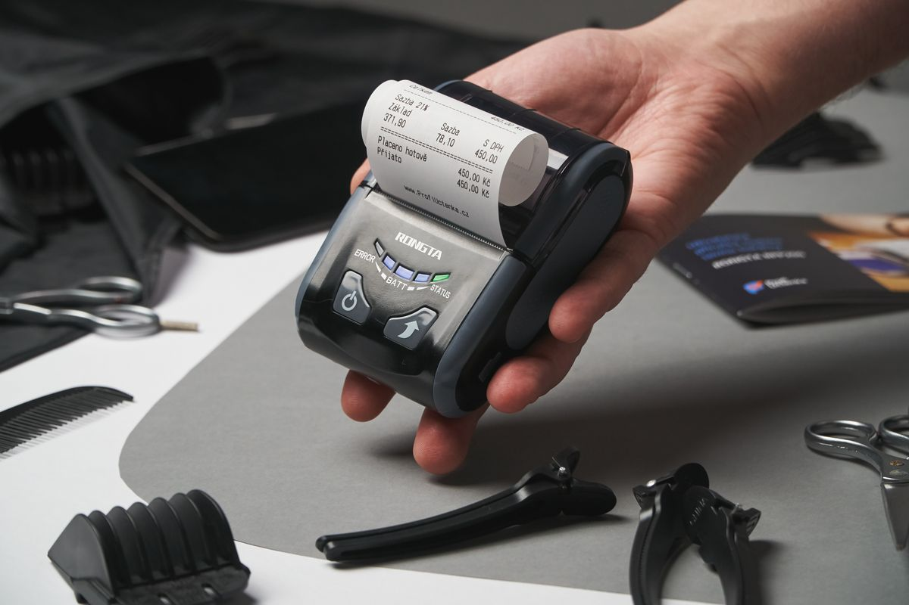
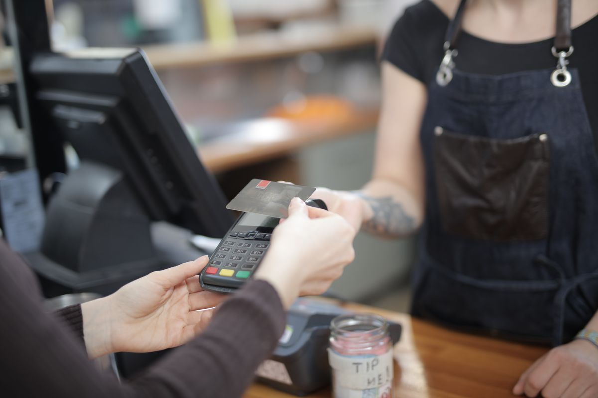

A shopkeeper walks into Hall Road in Lahore, or Saddar in Karachi, and asks a simple question: "Billing machine kitne ki hai?" He gets five different answers before lunch. One shopkeeper says Rs 30,000. Another says Rs 150,000. A third shows him a shiny touchscreen and says Rs 250,000 — and warns him that anything cheaper is a waste of money.
All three answers can be honest, and all three can be misleading. That is because "billing machine" is not one thing. It is a whole counter setup, and the price depends entirely on which pieces you actually need, which ones you already own, and which costs the seller forgot to mention. This guide breaks down the full counter setup cost in Pakistan for 2026 — every item, in rupees, with the three most common budgets and the traps that turn a cheap machine into an expensive mistake.
Prices below are typical market ranges seen in Pakistani computer markets and online stores in 2026. Exact prices move with the dollar rate, the city, and the brand — treat them as planning ranges, not quotations, and always confirm before paying.
First, Decide What "Billing Machine" Means for Your Shop
When Pakistani shopkeepers say "billing machine," they usually mean one of three very different setups. Naming yours first saves you from paying for the wrong one.
1. A standalone electronic cash register (ECR). One box with buttons, a small display, and a built-in receipt printer. It adds up bills and opens a cash drawer. It does not track stock properly, it does not remember customer udhar, and it cannot print item-wise reports you can actually use. It is cheap, and that is its only real advantage.
2. An all-in-one POS terminal. A touchscreen computer with a printer, a cash drawer, and sometimes a scanner built into a single unit. It looks professional, takes up little space, and is what you see at supermarkets and clothing chains. It is also the most expensive option, and if one part breaks, the whole unit often has to go for repair.
3. A PC setup: computer + billing software + printer + scanner + drawer. Separate pieces, each replaceable on its own. This is what most small and mid-size Pakistani shops actually run, because it is the most flexible: you may already own the computer, and you can upgrade one piece at a time. It is also the setup this guide prices in detail, because it is where the best value is.
If your shop is a small kiryana or general store, option 3 is almost always the right answer. If you run a busy supermarket counter where looks matter and space is tight, option 2 is worth pricing. Option 1 only makes sense if you truly want nothing more than printed bills — and in 2026, that is a very low ceiling for your money.
Every Piece of the Counter, Priced
Here is what each part of a billing counter typically costs in Pakistan in 2026, and what to watch for when buying it.
| Item | Typical price (PKR) | Notes |
|---|---|---|
| Electronic cash register (ECR) | 25,000 – 60,000 | Basic models only; no real stock or khata tracking |
| All-in-one POS terminal | 85,000 – 200,000 | Touchscreen + printer + drawer in one unit; premium brands go higher |
| Desktop PC (new, basic) | 60,000 – 120,000 | Any modern dual-core machine with 8 GB RAM runs billing software fine |
| Refurbished PC / mini PC | 25,000 – 70,000 | The budget king — test it for a full day before paying |
| Thermal receipt printer (58mm) | 8,000 – 15,000 | Narrow receipts; fine for small shops, tight for item detail |
| Thermal receipt printer (80mm) | 12,000 – 25,000 | The standard choice — wider, clearer bills customers can read |
| Portable Bluetooth printer | 15,000 – 30,000 | For delivery counters and shops without a fixed counter |
| Wired barcode scanner | 3,500 – 8,000 | The single best speed upgrade for any counter |
| Wireless barcode scanner | 8,000 – 18,000 | Worth it if your counter is large or you scan heavy items |
| Cash drawer | 6,000 – 12,000 | Buy one that opens from the printer, not a separate key |
| Barcode label printer | 18,000 – 35,000 | Only if you label your own products; skip it at first otherwise |
| Barcode weighing scale | 25,000 – 60,000 | For loose items — kiryana, grocery, and meat shops |
| UPS (650 VA) | 12,000 – 20,000 | Non-negotiable in Pakistan — it is what keeps billing alive during load shedding |
| Billing software (one-time) | 40,000 (shopcos soft) | Lifetime license; compare with subscriptions below |
The Three Budgets: What a Complete Setup Actually Totals
Adding the pieces up is where most shopkeepers get their first surprise — and their first useful number. Here are three realistic complete setups, assuming you need everything except where stated.
Budget 1: The Starter Counter — roughly Rs 55,000 to 90,000
For a small kiryana or general store that already has a working computer at home or in the shop. You add an 80mm thermal printer (Rs 12,000–25,000), a wired barcode scanner (Rs 3,500–8,000), a cash drawer (Rs 6,000–12,000), a UPS (Rs 12,000–20,000), and billing software. This is the setup that turns a spare PC into a real billing counter for less than the price of a single all-in-one terminal — and every piece can be replaced separately later.
Budget 2: The Standard Shop Counter — roughly Rs 130,000 to 200,000
For a general store, pharmacy, or garment shop starting from zero. A refurbished or basic new PC, an 80mm printer, a wireless scanner, a cash drawer, a UPS, and one-time billing software. Add a barcode label printer (Rs 18,000–35,000) if you sell unbranded or loose-packed items that need your own labels. This is the sweet spot for most Pakistani shops: professional bills, real stock tracking, and customer khata — without paying for a touchscreen you do not need.
Budget 3: The Full Supermarket Counter — roughly Rs 250,000 to 400,000
For a busy grocery or mini-mart. An all-in-one POS terminal or a fast PC with a large display, an 80mm printer, a wireless scanner, a barcode weighing scale for loose items (Rs 25,000–60,000), a cash drawer, a UPS, and software — plus a second counter's worth of printer and scanner if queues are long. At this level, speed is the product: every second saved per bill is a customer who does not walk away from the queue.
The number that matters most is not the machine's price — it is the five-year price. A "cheap" system with a monthly subscription of Rs 5,000 costs Rs 300,000 over five years, and stops working the month you stop paying. A one-time software license of Rs 40,000 plus hardware you own outright is usually far cheaper by year two — and your sales data stays yours. Our POS price guide runs that comparison in full.

The Hidden Costs Sellers Never Put in the Quotation
The machine's price tag is only the first bill. These are the costs that quietly add up afterwards — budget for them now, or they will surprise you later.
- Receipt paper rolls. A roll costs roughly Rs 150–350 depending on size and quality, and a busy shop can go through several a week. Cheap paper jams printers and fades within months, which matters when a customer returns with a faded bill. Buy a month's supply at once and you will immediately see the real monthly cost.
- Printer maintenance. Thermal printers have no ink, but their print heads wear out, and dust in a market shop kills them faster. A printer that is never cleaned lasts a year; one wiped weekly lasts three or more. Budget a replacement every two to three years for a busy counter.
- The UPS battery. The UPS itself is Rs 12,000–20,000, but its battery needs replacing roughly every 18–24 months. A dead UPS battery is the same as no UPS — test it monthly by pulling the plug during a quiet hour and confirming billing keeps running. This is the same reason our offline vs online billing guide insists the counter must never depend on the internet: billing is the one job that cannot wait for anything.
- Software subscriptions. This is the big one. Many billing systems look cheap at Rs 2,000–3,000 a month until you add a second user, a second branch, or the "premium" features that turn out to be basic stock reports. Always ask for the price of everything you will actually use, in writing, before you commit.
- Training and downtime. A system your staff cannot use confidently in a week costs you sales every single day. Factor in one day of proper training — our one-day staff training plan is built exactly for this — and the first week's slower billing while everyone learns.
Where to Buy, and How to Avoid Getting Burned
Computer markets like Hall Road in Lahore, Saddar in Karachi, and the tech markets in Rawalpindi and Faisalabad usually beat online prices for printers, scanners, and drawers — and you can test the item on the spot. Online stores are fine for standard items with clear model numbers, but check the seller's return policy before ordering anything you cannot test.
Wherever you buy, run these checks before you pay:
- Print a real bill on your software, not the demo. A printer that works in the shop's demo app may still misbehave with your billing software's paper size or character set. Bring your laptop, or ask for a same-day exchange guarantee in writing.
- Scan your own products. Bring ten items from your shop — including a crumpled barcode and a small one — and scan them all. A scanner that only reads perfect barcodes will slow your counter to a crawl.
- Check the warranty, and who honors it. A one-year shop warranty is worth more than a three-year "company warranty" that requires shipping the item to another city. Ask what happens if it breaks in month two.
- Avoid the cheapest no-brand printer. The Rs 5,000 printer that saves you Rs 7,000 today is the one that jams during Eid rush, eats a roll of paper an hour, and has no spare parts when it dies. Mid-range branded thermal printers are the best value in this entire guide.
- Buy the UPS on the same day as the PC. Shops that "will buy the UPS next month" are the shops whose billing stops at the first load shedding of the season. It is the cheapest insurance in the whole setup.

Card Machines: The Separate Question
One item deliberately left out of the budgets above is the card machine, because in Pakistan it is usually not something you buy — it is something a bank provides. Debit and credit card terminals are typically issued by your bank against your business account, sometimes with a monthly rental or a per-transaction fee, and sometimes free above a certain volume. If a seller tries to sell you a card machine as part of a "billing machine package" at a big markup, pause: call your bank first and ask what terminal they offer your account type. For most small shops, JazzCash and Easypaisa QR payments at the counter cover the cashless customers without any card-machine cost at all.
What Not to Buy (Yet)
New shopkeepers overspend in predictable places. You do not need a customer-facing display on day one — a printed bill does that job. You do not need a second screen for advertising until your queue is long enough to have an audience. You do not need a barcode label printer until you actually stock unlabelled products. And you do not need the biggest, fastest PC in the market: billing software is light work, and the money is far better spent on a good printer, a good scanner, and a UPS that actually holds a charge.
The right order to spend is simple: printer and scanner first, UPS the same day, software that fits your shop, and everything else only when a real problem — not a salesman's pitch — demands it.
The Bottom Line
A billing machine in Pakistan in 2026 costs anywhere from Rs 25,000 for a basic cash register to Rs 400,000 for a full supermarket counter — but the number that should guide your decision is not the sticker price. It is the total cost of the counter over five years, including paper, batteries, maintenance, and the software model you choose. A starter PC setup with a good 80mm printer, a reliable scanner, a UPS, and one-time software gives most Pakistani shops everything they need for well under Rs 200,000 — and, unlike a subscription system, it keeps working and keeps your data yours no matter what happens next year.
Before you spend a rupee, write down your three budgets, visit two sellers with the same list, and test every item on your own software. The shopkeeper who does that never overpays — and never has to explain to a queue of customers why the billing machine is "loading."
Photo credits: Modern supermarket checkout counter photo by Jack Sparrow · Portable receipt printer photo by Hook Tell · Card payment at a shop counter photo by Andrea Piacquadio — all via Pexels.